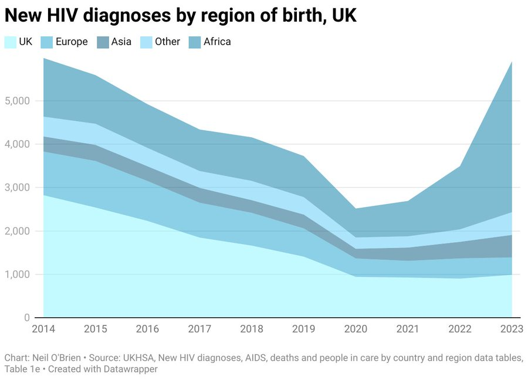

JUST IN: 🇺🇸 CFTC officially proposes first round of rules to regulate US crypto markets.
Five years ago, Attorney General Merrick Garland issued an infamous memorandum at the urging of the National School Boards Association and White House officials, directing the FBI and United States Attorneys to consider looking for a federal hook to prosecute parents exercising their right to free speech.
Today, we are releasing the “Report to Expose the Weaponization of Government Against Parents in Schools” which details Weaponization of the Department against these parents — from attempting to get the National Security Division involved to ignoring repeated warnings from employees that leadership’s actions could be unconstitutional.
Along with the report, we’ve released hundreds of exhibits and emails that make official and verify what many Americans had guessed: the Garland DOJ worked hand in hand with WH officials and the National School Boards Association to chill free speech and parental rights while they threatened to prosecute parents and label them domestic terrorists.
Read the full report and our remedies here: https://t.co/qh2sOa5dyH
If Montana University System expands J1 or H1B staffing then I will vote AGAINST renewing their $35 million property tax levy which funds them
Montana homeowners shouldn't be taxed a single penny to pay the salary of new foreign teachers they hire because of this trip
▶ Watch on X🔥On CFTC Teaser: The institutional sleeper is collateral. On September 24, the CFTC updated guidance addressing tokenized permitted investments and blockchain recordkeeping, building on earlier digital-asset margin guidance. A broader announcement could connect crypto more directly to institutional derivatives infrastructure.
NEW: The SEC approves 3x leveraged $BTC and $ETH ETFs, a first for U.S. crypto funds previously capped at 2x leverage, though trading cannot begin until the SEC declares the registration statement effective.
.@CFTC Seeks Public Comment on Advanced Notice of Proposed Rulemaking Relating to Regulation Crypto Asset Transactions and Regulation Crypto Asset Markets: https://t.co/0RFFzG0MPp
It just doesn’t seem real, does it? This is the level of resources the state is giving to around 120 illegal migrants who have just broken into Britain. Remember this the next time they complain about a lack of police resources or numbers.
~50% of all HIV diagnoses in the UK are from African migrants. In just 3 years, African migration alone doubled the rate of HIV in the UK.

Nearly all women who try to reach UK in small boats are raped during their journey, home secretary says
I have dug through over 7,000+ arrest records in the state of North Carolina over the past 2 weeks.
What I found was so shocking, I had a hard time believing it myself...
It appears major fraud is taking place in arrest records where Black offenders are labelled White.
I didn't come across this once or twice.
It appears that a few HUNDRED Black offenders are being labelled as White.
The option to pick "BLACK" exists and is used frequently in arrest records...
...but it seems they are purposely choosing the label of "WHITE AFRICAN" or "WHITE CAUCASIAN" to identify someone who is clearly a "BLACK" person.
This is massive fraud.
ROSEMARY JENKS: There are about 750,000 primary H-1B visa holders working in the U.S., plus roughly 200,000 H-4 holders who are also authorized to work and another 400,000 OPTs.
That's over 1.3 million American jobs that have been removed from American workers.
@iaproject
#BREAKING: JD Vance is assembling a ‘coalition to go after the H-1B program.’
🚨 Trump is calling out The New York Times over the photo they used of Trump National Doral, saying they made the resort look dark and run-down.
He posted another photo showing what the resort actually looks like, and the difference is pretty obvious.
This is why these people have zero credibility and no one trusts them.
NEW: Every federal judge in the Middle District of Tennessee has recused from Sen. Marsha Blackburn’s lawsuit against former Special Counsel Jack Smith. The Sixth Circuit will now designate an outside district judge to hear the case.
A "dragon" drone with thermite is burning enemy hideout. The use of such drones increase the effectiveness of combat operations and reduce risks for personnel.
📹: 109th Assault Battalion
Arrived in Iceland to advance our shared priorities: a secure Arctic, stronger commercial and energy ties, and closer defense cooperation.
Under @POTUS, the United States is showing the world what real economic growth looks like.
With just around 4% of the world’s population, we produce 26% of global nominal GDP. Our firms lead the G20 in productivity. And more than 60 of the world’s 100 most valuable companies are American.
Two hundred and fifty years after America’s founding, our best days are the ones we are still building.
JUST IN: Trump says he knows "more about everything" than anybody in the world